PAB/ (self-contained)Dokumen ini memetakan seluruh modul PAB: 7 langkah pipa utama (Step 0→4) plus 4 alat standalone yang menyisip di antara langkah. Setiap modul = 1 file .m di akar PAB/, dijalankan setelah pab_setup. Satu kebenaran (one truth) per tahap; alat lanjut tiap modul menjaga pekerjaan tak ditinggal sebelum tuntas.
Garis biru = pipa utama (urutan Step). Kotak ungu = alat standalone non-destruktif yang menyisip. Panah putus-putus = membuka modul berikutnya lewat tombol "Lanjut".
Tiga aset data kanonik mengalir melalui pipa. Aturan emas: 1 eksperimen = 1 file; blob asli JPG tak pernah disentuh (masking & exclusion bersifat resep non-destruktif).
| Aset | Dihasilkan oleh | Isi | Dipakai oleh |
|---|---|---|---|
| MAT PREP | PAB1 (handoff) | blob JPG RAW + EXIF dt + kurva jitter + resep masking + config QPIV | PAB2, PABMASK |
| MAT PIV | PAB2 | vektor PIV + GS tersemat + geometri/strain bertanda — arsip akhir | PAB3/3a/4, MATPIVEDIT, PABEXPORT |
| _potdata.json _comments.json | PAB4 | garis PSG, label HW, net-slip, titik POI, komentar bertag | PAB4, ekspor Claude |
Provenance. MAT PIV mencatat MAT PREP induknya; MAT PREP mencatat daftar keluaran MAT PIV. Rantai dapat ditelusuri bila salah satu berkas rusak.
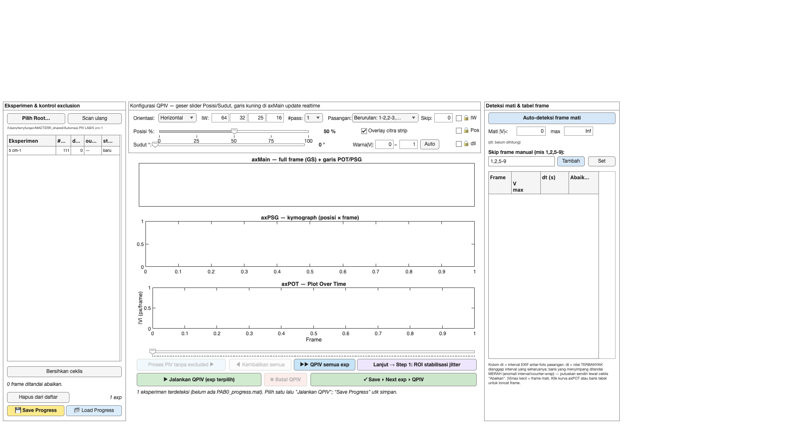
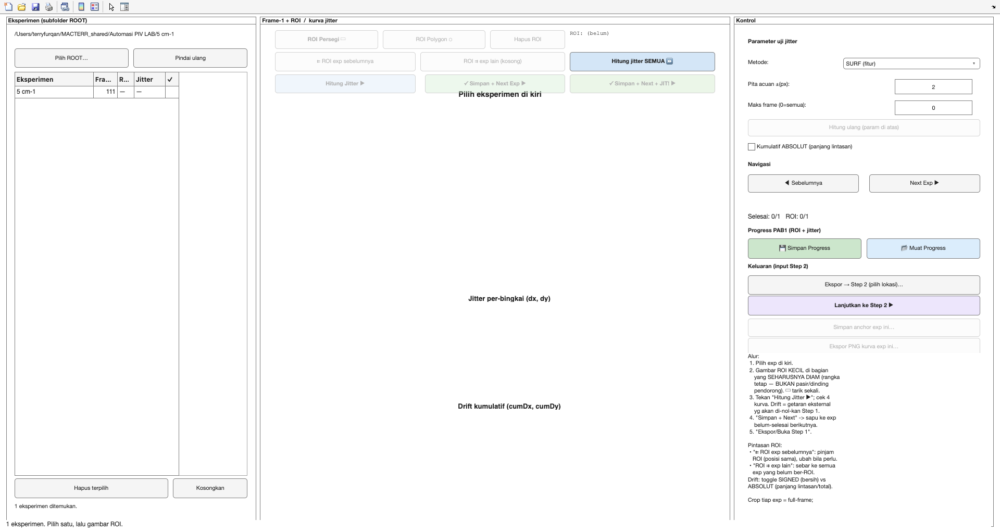
prep.masking — blob JPG asli utuh.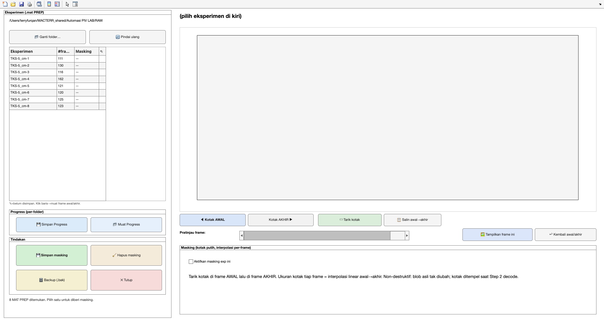
PIV_<tgl>/ di root.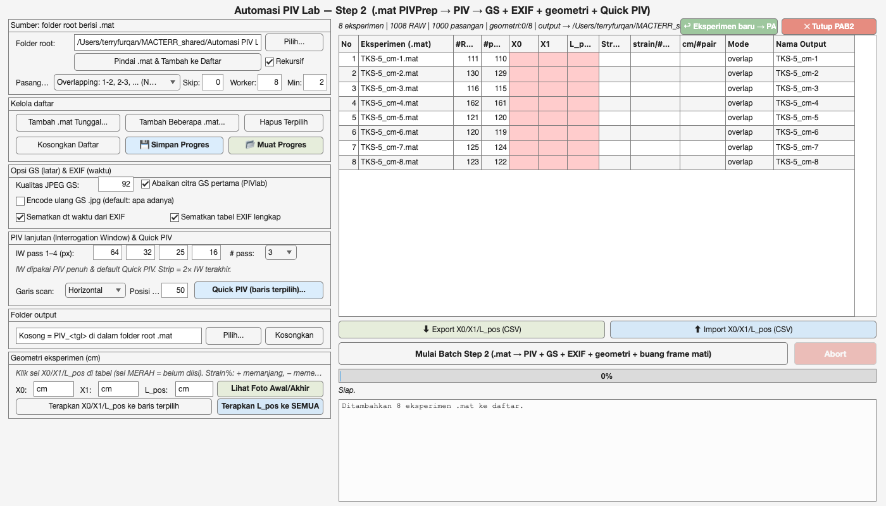
pivanalyze.geom.computeGeometry) + backup .bak.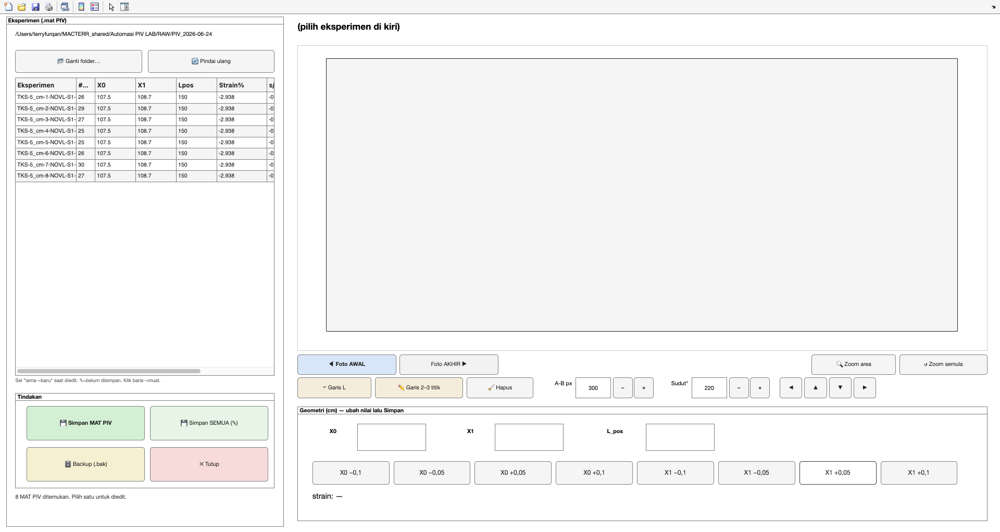
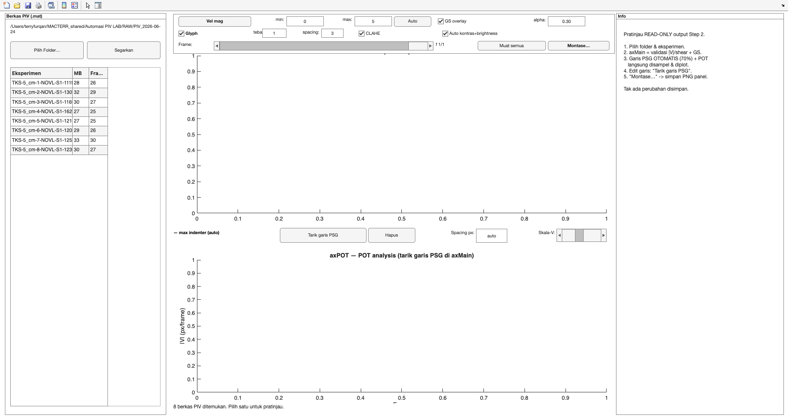
<base>_autopot.mat (format kompatibel suite PIVTerry).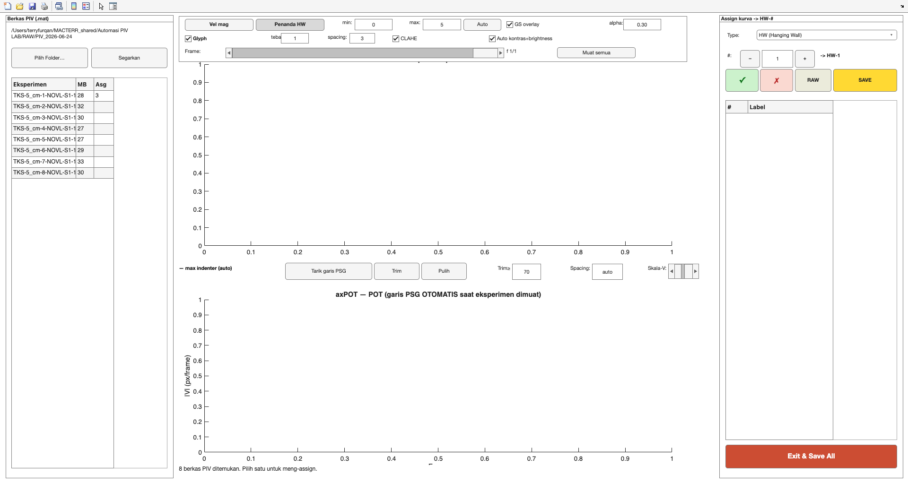
_potdata.json + _comments.json). Tak ada reload antar-operasi. PAB4A/PAB4B kini forwarder tipis ke tab tertentu._potdata langsung aktif (terkunci+seed); fallback ke seed _autopot PAB3a (baca-saja).PAB4_claude/<base>/ = comments.json + curves.json (data numerik kurva HW) + hw_story.json + PNG per-komentar + README pengarah.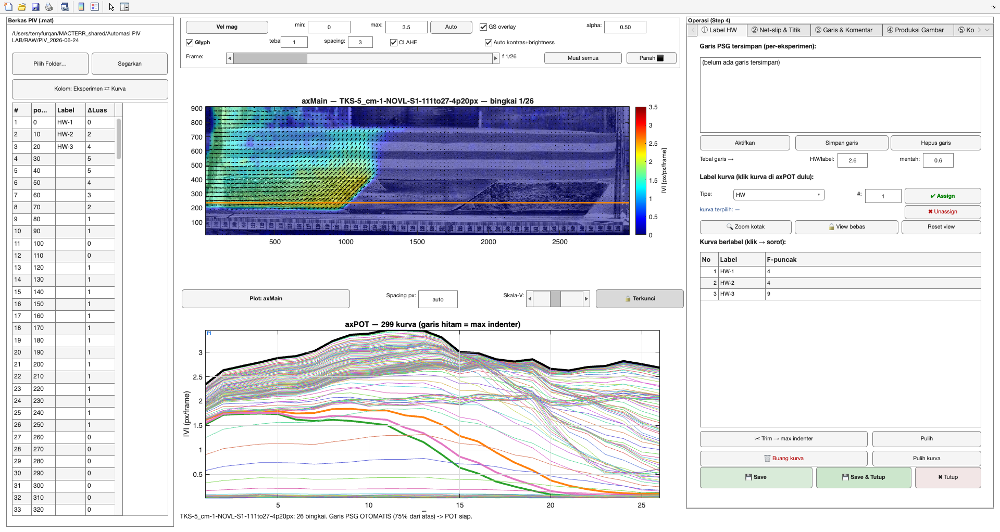
PAB_export/<exp>/velmag|shear/ + manifest histori.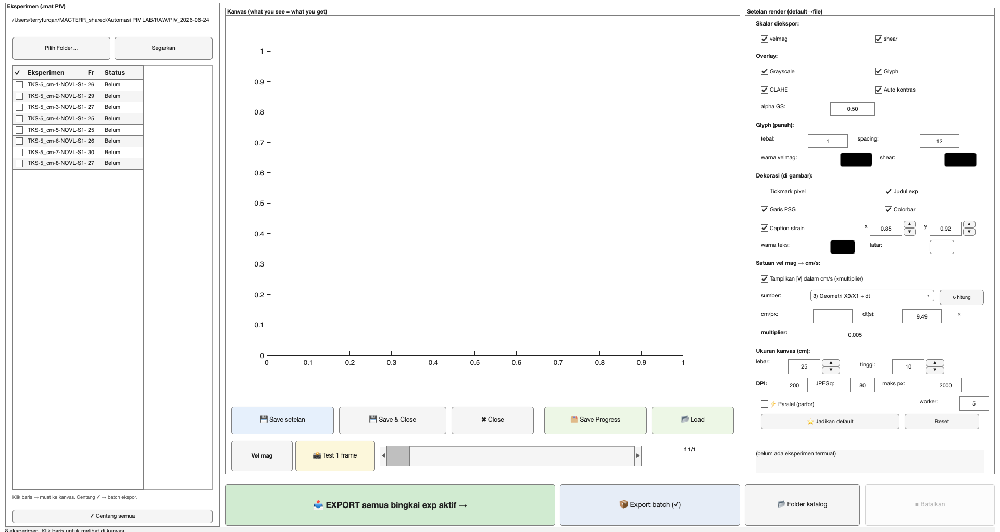
<base>_axpot.mat (ekspor PAB4 tab ⑤ "Save as AX POT").Tab ③ PAB4 bukan sekadar catatan. Ini kanal dua-arah antara peneliti dan Claude: peneliti menulis deskripsi/interpretasi yang tertaut ke objek eksperimen (frame, garis PSG, kurva HW, titik), PAB4 memproduksi gambar yang sinkron persis dengan tiap komentar, lalu mengekspor semuanya sebagai bundel yang dibaca Claude Cowork (CLCW) untuk menyusun laporan ilmiah. Tujuannya: Claude membaca narasi + gambar + angka tanpa ambiguitas.
| Peran | Singkatan | Tugas |
|---|---|---|
| Claude Code (di MATLAB/repo) | CLCC | Membangun & memelihara modul PAB; menjalankan ekspor; menjamin bundel konsisten (guard fingerprint, tulis _HANDSHAKE.md). |
| Claude Cowork (pembaca bundel) | CLCW | Membaca PAB4_claude/, menafsirkan komentar+gambar+angka, menulis REPORT.md, opsional membalas komentar sebagai role:"CLAUDE". |
PAB4_claude/ → Claude Cowork; balasan kembali sebagai komentar role:"CLAUDE". Guard fingerprint menjamin gambar ↔ data sinkron.Tiap komentar = satu objek di <base>_comments.json (kebenaran per-eksperimen, di samping .mat). Yang membuatnya kuat: tertaut dan self-describing.
| Field | Arti |
|---|---|
id · time · role | Identitas (c001…), waktu, USER atau CLAUDE. |
frame · psgId · curve | Konteks tempat komentar dibuat: nomor frame, garis PSG (id stabil), kurva/label HW aktif. |
text | Deskripsi/interpretasi peneliti (markdown bold; bisa panjang multi-baris). Boleh sisipkan tag inline. |
refs | Rujukan terstruktur auto-tangkap: exp/psg/curve/frame/strainPct/posPx — angka konkret, bukan sekadar teks. |
images | 3 gambar Export-3 (velmag/shear/axpot) tab ③, bila ada. |
assets[] | Gambar ber-spec tab ④ (lihat 9.4): kind/file/spec/fingerprint/producedAt. |
Tag inline = rujukan objek di tengah kalimat (konsistensi penyebutan unsur): @exp:<base> (wajib, auto-prepend), @psg:<id>, @curve:HW-N, @frame:N, @strain, plus rujukan POI. Jadi saat CLCW membaca "...melintasi @curve:HW-2...", ia tahu persis kurva mana dan bisa menariknya ke angka di curves.json.
Masalah klasik: narasi bilang X, gambar menunjukkan Y. PAB4 menutupnya dengan kontrak sinkron: satu shotSpec menggerakkan render PNG dan ditulis ke JSON — UI tak pernah dibaca ulang saat ekspor, jadi PNG ↔ JSON tak bisa beda.
manifest.json) → semua PNG eksperimen berskala sama (komparabilitas paper).PAB4_claude/<base>/| Berkas | Untuk CLCW |
|---|---|
comments.json | Semua komentar + refs + tautan gambar (skema PAB4 Comments). |
curves.json | Data numerik kurva HW teridentifikasi: |V| per-frame, puncak, cutFrame, net-slip (start/nuc/fsr/end/area/dNet) → menautkan @curve:HW-N ke angka. |
hw_story.json + HW/HW-N_axpot.png | Paket cerita ber-anchor HW: tiap hanging wall = 1 gambar axPOT + kurva + titik observasi + net-slip + komentar tertaut. HW = titik ikat narasi sesar (thrust). |
comments/<id>/ | Satu folder per komentar: PNG ber-spec + comment.json. |
manifest.json | CLim terkunci + metadata skala. |
_HANDSHAKE.md | Status sinkron bundel (✅/⚠️) — CLCW cek dulu sebelum melapor. |
READ_ME_CLAUDE.md | Pengarah langkah-demi-langkah tugas CLCW (indeks bundel). |
Setiap Export, CLCC menjalankan guard otomatis: tiap asset terdaftar harus punya file; tiap PNG harus terdaftar (anti-yatim); fingerprint asset harus padan fingerprint dari spec-nya. Hasil ditulis ke _HANDSHAKE.md:
Konvensi pelaporan CLCW: saat menulis REPORT.md, sebutkan jumlah asset per komentar + fingerprint yang dibaca, agar CLCC bisa konfirmasi versi data yang dipakai memang terkini. Balasan CLCW (opsional) ditulis sebagai komentar baru role:"CLAUDE" (frame/psgId/curve sama) → muncul inline di tabel PAB4 dengan prefiks [CLAUDE]:, bukan kolom terpisah.
Engine: pivcore.io.pab4Comments (CRUD atomic + exportClaude/verifyBundle/writeHandshake/writeClaudeReadme), pivcore.io.pab4Shots (specStruct/fingerprint), pivcore.io.pab4Curves (curves.json). Semua murni/headless & lulus R2025b.
Inti analisis POT: kita tidak mengikuti partikel pasir (itu Lagrangian). Kita pasang deret probe diam di sepanjang garis PSG — posisinya tetap di ruang sepanjang eksperimen. Tiap frame, tiap probe membaca |V| pada selnya (rata-rata blok 3×3). Material bergerak melewati probe; probe merekam apa yang lewat. Itulah sampling Eulerian.
| Aspek | Eulerian (yang dipakai PAB) | Lagrangian (bukan ini) |
|---|---|---|
| Yang diamati | Titik tetap di ruang (garis PSG) | Partikel material yang ikut bergerak |
| Pembacaan | |V| yang lewat tiap probe, per frame | Lintasan tiap partikel sepanjang waktu |
| Sumbu kurva | posisi probe & waktu/strain | perpindahan partikel |
| Untuk apa | Mendeteksi kapan & di mana sesar/HW melintas (puncak kurva) | Melacak deformasi partikel individual |
Implementasi: pivcore.pot.step1Collect.collectAlongLine menebar n = floor(L/spacing)+1 probe pada garis p1→p2; tiap probe mengambil rata-rata blok 3×3 sel PIV per frame → deret-waktu (1×nFrames). Inilah record yang di-label HW di PAB4 dan dirender sebagai AX POT.
Empat jenis keluaran kanonik yang dihasilkan pipa, dari data contoh nyata (TKS / P-CON). Vel mag & shear strain = gambar AX main (PABEXPORT / PAB4 tab ④). AX PSG = medan skalar dengan garis PSG tempat sampling. AX POT = profil |V| sepanjang garis itu, dianalisis lintas frame.
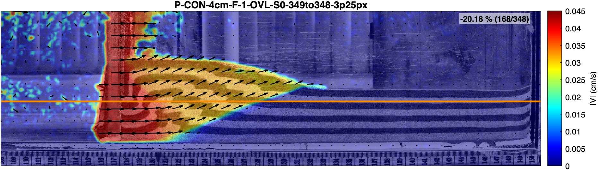
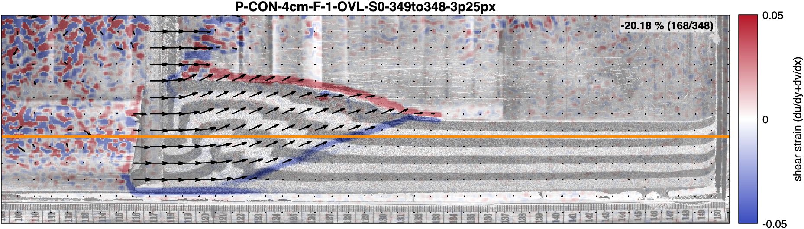
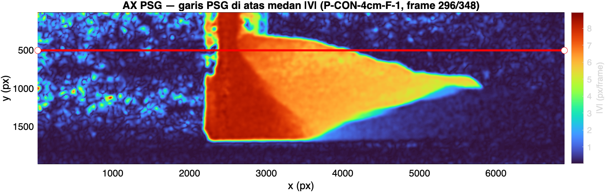
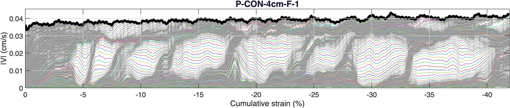
Sekali per sesi MATLAB (selalu R2025b):
pab_setup
Lalu, mengikuti urutan pipa:
PAB0 → PAB1 → PAB2 → PAB3 / PAB3a → PAB4
Alat standalone dipanggil kapan perlu: PABMASK, MATPIVEDIT, PABEXPORT, PABAXPOT. Tiap modul menerima argumen folder root opsional (mis. PAB2(prepDir,true)) dan punya tombol "Lanjut" ke modul berikutnya agar pekerjaan tak ditinggal sebelum tuntas.
PAB/ hanya berisi PAB* + pab_setup + paket. _reference/ (PIVprep_V2 + PIVTerry) = inspirasi baca-saja — jangan dikembangkan / dipanggil lintas-folder.Tahap lanjut (di luar pipa MATLAB): membuat katalog web read-only agar seluruh anggota lab dapat melihat hasil akhir analisis PIV dari mana saja lewat URL. Saat ini hasil hanya berupa berkas lokal di mesin operator (PAB/PAB_export/ + EXP_coll/) dan tak bisa diakses bersama. Rencana ini tidak menyentuh modul PAB mana pun — ia hanya menurunkan katalog dari keluaran yang sudah ada.
| Aspek | Keputusan |
|---|---|
| Akses | Internet publik; semua anggota lab membuka via URL. |
| Sifat | Read-only — hanya melihat. Tersedia browse + filter/cari + download. |
| Konten | 100% JPEG. Data mentah .mat (~1,1 GB/exp) tak pernah ke web; tetap di sistem operator. Yang disajikan: velmag, shear, GS, axPOT, PSG — semuanya gambar. |
| Pembaruan | Manual oleh operator: ekspor MATLAB → sync ke web. |
| Numerik axPOT | Fase berikutnya, bukan v1. Datanya sudah ada di _potdata.json; arsitektur menyiapkan tempatnya saja. |
| Biaya | Sekitar $5–10/bln; diajukan ke ITB. |
Karena hasil sudah statis (gambar + JSON) dan tak perlu komputasi server, web-nya adalah situs statis: HTML + CSS + JavaScript — bukan server Python. Python hanya dipakai sebagai script bantu upload yang dijalankan sekali per batch, bukan sebagai backend.
publish.py (manual) → gambar ke R2 & situs ke Pages → browser anggota lab menarik JPEG + katalog JSON. Tidak ada komputasi di server.Cloudflare R2 dipilih karena egress (bandwidth) gratis — keunggulan utama dibanding S3/B2 untuk penyajian gambar. Pages menghosting situs statis gratis. Opsi Google Drive dan komputer-lab-nyala-terus ditolak (rate-limit/URL rewel; uptime/IP rapuh).
boto3 (R2 kompatibel-S3). Dijalankan manual tiap selesai ekspor.PAB_export/ + pasangan EXP_coll/<grup>/<exp>_axpot.jpg & _potdata.json.datasets/<exp>/<scalar>/fNNN.jpg); idempoten — skip yang sudah ada.site-catalog.json ramping (bukan manifest penuh) untuk situs.index.html — tabel daftar eksperimen + filter (slope/type/thickness) + pencarian + thumbnail.experiment.html?exp=<id> — detail: panel peta/penampang/analisis, slider frame velmag+shear (navigasi ←/→), panel axPOT, tombol download, sidebar metadata.style.css (light grid responsif), app.js (list+filter), viewer.js (slider + preload tetangga).piv-lab), aktifkan akses publik / custom domain.web/site/ (atau unggah langsung).web/README.md: set .env, jalankan publish.py, publish Pages, catatan biaya & ajuan ITB.publish.py ikut upload _potdata.json ke datasets/<exp>/axpot/potdata.json.experiment.html isi slot "Kurva numerik" dengan plot interaktif (uPlot/Chart.js) + unduh CSV.Data acuan (read-only, jangan diubah): PAB_export/_catalog.json (indeks global), PAB_export/<exp>/manifest.json (spec + daftar file scalar), folder velmag/ & shear/ (JPEG ~238 KB), EXP_coll/<grup>/<exp>_axpot.jpg, dan _potdata.json (kurva sebagai angka, untuk fase numerik). Penamaan exp terurai jadi kolom filter mengikuti kode kanonik penamaan eksperimen. Penting: jumlah frame dihitung dari isi folder, bukan dari count di JSON (bisa mismatch saat render belum tuntas).